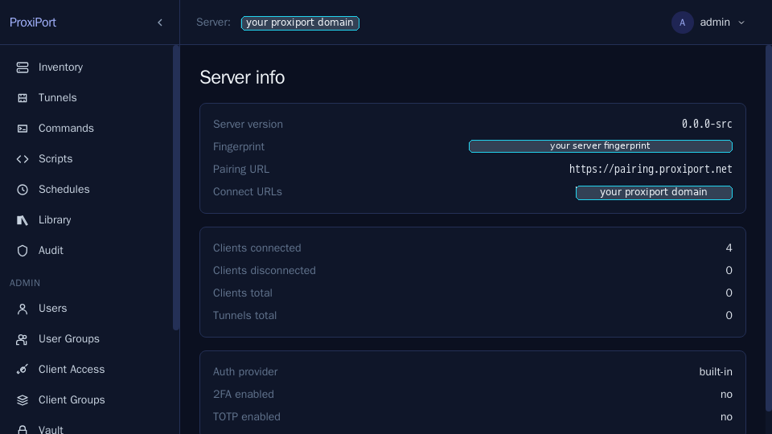

Install¶
Just want to see it work?
The public demo at
https://demo.proxiport.net/ lets
you sign in (demo / demo) and explore an Inventory of three
pre-registered agents without installing anything. State resets
on the half-hour.
ProxiPort has two pieces: the server (proxiportd) and the agent
(proxiport). One server reaches many agents; the agent dials the server
over an outbound WebSocket, so it works behind NAT without inbound
firewall rules.
This page covers a single-server install on Linux and a single Linux agent. macOS and Windows agents follow the same shape with the platform-native service manager.
Server¶
Requirements¶
- Linux x86_64 or arm64 with systemd.
- A public hostname pointed at the host. The Pick a public listener step below walks through the three TLS setups (built-in ACME, manual cert, reverse proxy) — all of them need a hostname.
- Ports 80 and 443 reachable from the network you want agents to connect from (80 for the agent listener and ACME HTTP-01 challenges, 443 for the TLS API).
- SQLite is the default datastore; MySQL is also supported.
Install¶
Each release on the
GitHub releases page
ships the server for linux/amd64 and linux/arm64 in three formats:
- Debian/Ubuntu
.deb—proxiportd_<ver>_linux_<arch>.deb - Fedora/RHEL/openSUSE
.rpm—proxiportd_<ver>_linux_<arch>.rpm - Tarball —
proxiportd_<ver>_linux_<arch>.tar.gz, for other distributions
Asset filenames carry the version; the snippets below resolve the
latest tag from the GitHub API before downloading. Substitute arm64
for x86_64 on aarch64 hosts.
Debian / Ubuntu¶
VER=$(curl -fsSL https://api.github.com/repos/proximile/proxiport/releases/latest \
| sed -n 's/.*"tag_name": *"\([^"]*\)".*/\1/p')
curl -LO "https://github.com/proximile/proxiport/releases/download/${VER}/proxiportd_${VER#v}_linux_x86_64.deb"
sudo dpkg -i "proxiportd_${VER#v}_linux_x86_64.deb"
Fedora / RHEL / openSUSE¶
VER=$(curl -fsSL https://api.github.com/repos/proximile/proxiport/releases/latest \
| sed -n 's/.*"tag_name": *"\([^"]*\)".*/\1/p')
sudo rpm -ivh "https://github.com/proximile/proxiport/releases/download/${VER}/proxiportd_${VER#v}_linux_x86_64.rpm"
Tarball (other distributions)¶
VER=$(curl -fsSL https://api.github.com/repos/proximile/proxiport/releases/latest \
| sed -n 's/.*"tag_name": *"\([^"]*\)".*/\1/p')
curl -LO "https://github.com/proximile/proxiport/releases/download/${VER}/proxiportd_${VER#v}_linux_x86_64.tar.gz"
tar xzf "proxiportd_${VER#v}_linux_x86_64.tar.gz"
sudo install -m 0755 proxiportd /usr/bin/proxiportd
sudo install -d /etc/proxiport
sudo install -m 0644 proxiportd.example.conf /etc/proxiport/proxiportd.conf
sudo install -m 0644 proxiportd.service /lib/systemd/system/proxiportd.service
sudo useradd --system --home /var/lib/proxiport --shell /usr/sbin/nologin proxiport || true
getent group ssl-cert >/dev/null || sudo groupadd --system ssl-cert
sudo install -d -o proxiport -g proxiport -m 0750 /var/lib/proxiport
sudo install -d -o proxiport -g proxiport -m 0750 /var/log/proxiport
sudo setcap CAP_NET_BIND_SERVICE=+eip /usr/bin/proxiportd
sudo systemctl daemon-reload
The ssl-cert group is listed in the unit's SupplementaryGroups so
the daemon can read certbot/manual TLS keys — systemd will not start
the service if the group is missing. setcap ships in libcap2-bin
(Debian/Ubuntu) or libcap (RHEL-family) if your base install lacks
it.
Tarball installs do not auto-generate secrets or seed the config; the Configure step below covers what to set by hand.
Building from source¶
If none of the published artefacts fit your platform — or you want a container image, which we do not publish — build from source:
go install github.com/proximile/proxiport/cmd/proxiportd@latest
The server needs CGO (CGO_ENABLED=1) for the embedded SQLite. The
agent is pure Go.
The version string is injected at release time via linker flags, so a
plain go build / go install reports 0.0.0-src for
proxiportd --version (and proxiport --version). That is expected — to
stamp a real version into a source build, pass the ldflag yourself:
go build -ldflags "-X github.com/proximile/proxiport/share.BuildVersion=0.6.0" \
./cmd/proxiportd
Quick setup with proxiport-setup¶
If this is a single-host install with a public hostname pointed at it,
the proxiport-setup script bundled with the .deb / .rpm does
everything below in one command:
sudo proxiport-setup --fqdn proxiport.example.com
It mirrors the upstream openrport curl-bash installer: takes --fqdn,
--email, --api-port, --client-port, --port-range, --totp /
--no-2fa; opens UFW or firewalld rules; rewrites proxiportd.conf to
bind :80 for agents and :443 for the API; turns on built-in ACME if
the hostname is publicly resolvable (or accepts --cert-file /
--key-file for an existing PEM pair); creates a SQLite
users/groups/group_details/clients_auth schema with a
bcrypt-hashed random admin password; enables TOTP 2FA by default;
starts proxiportd; and prints the admin URL and credentials.
If that fits your install, jump to Log in. If you want to lay it out by hand, read on — the remaining sections walk through exactly what the script automates.
What just happened¶
The .deb / .rpm post-install ran four steps the operator otherwise
has to do manually:
- generated a random ECDSA
key_seed, JWT signing secret, admin password, and first agent credential — all written into/etc/proxiport/proxiportd.confin place of the example placeholders; -
recorded the admin and client-auth credentials in two files under
/var/lib/proxiport/:/var/lib/proxiport/initial-admin-password # SPA login /var/lib/proxiport/initial-client-auth # first agent's auth pairBoth files are mode
0640 root:proxiport. Read withsudo cat. They are shredded from disk the first time an admin logs in with a password, so retrieve them and store the credentials in a password manager before that first login. -
granted
CAP_NET_BIND_SERVICEon/usr/bin/proxiportdso the unprivilegedproxiportuser can bind ports 80 and 443; - created
/var/lib/proxiport(state) and/var/log/proxiport(logs) withproxiportownership.
The server is not yet enabled. The seeded config binds the API to
127.0.0.1 only, so nothing is reachable from the network until the
next step (or until you run proxiport-setup, which handles all of
this in one shot).
At-rest field encryption is off by default, so the seeded
totp_secret column, the vault, and the freshly generated key_seed /
jwt_secret in the config are all stored unencrypted. To wrap them
under a server-held key, configure a [key_provider] — see the
[key_provider] section of proxiportd.example.conf,
encrypting the config secrets,
and Two-factor authentication.
Pick a public listener¶
The seeded config leaves [api] address = "127.0.0.1:3000" so nothing
is exposed off-box until you choose how TLS will be served. There are
three working setups; pick one and edit /etc/proxiport/proxiportd.conf
accordingly. Full walk-through with worked examples is in
HTTPS.
Single-purpose host with a public DNS A record pointing at it and
port 80 reachable from the internet for Let's Encrypt's HTTP-01
challenge. proxiportd obtains and renews the certificate itself.
[api]
address = "0.0.0.0:443"
base_url = "https://proxiport.example.com"
enable_acme = true
Bring your own cert + key (certbot --manual, internal CA, anything
PEM). Both files must be readable by the proxiport system user.
[api]
address = "0.0.0.0:443"
base_url = "https://proxiport.example.com"
cert_file = "/etc/proxiport/tls/fullchain.pem"
key_file = "/etc/proxiport/tls/privkey.pem"
nginx / Caddy / Traefik terminates TLS upstream and forwards plain
HTTP to proxiportd over loopback. Keep address = "127.0.0.1:3000"
in the seeded config and point your proxy at it. See
HTTPS for the directives
each proxy needs for the WebSocket upgrade.
Open the firewall¶
Wherever your server runs there is probably one host-level firewall and one cloud-level firewall. Both need port 80 (for the agent listener and ACME HTTP-01) and 443 (for the TLS API), unless you went with the reverse-proxy option.
sudo ufw allow 80/tcp
sudo ufw allow 443/tcp
sudo firewall-cmd --add-service=http --permanent
sudo firewall-cmd --add-service=https --permanent
sudo firewall-cmd --reload
On hyperscalers the host firewall above only opens the kernel —
the cloud's network firewall is what the public internet sees. Add
inbound TCP rules for 80 and 443 to the droplet's Cloud
Firewall (DO), the instance's Security Group (AWS), or the VPC
firewall (GCP).
Enable the service¶
sudo systemctl enable --now proxiportd
sudo systemctl status proxiportd
If the unit fails to start, journalctl -u proxiportd -n 50 shows
why — the most common causes are an [api] address that's already in
use, a base_url whose hostname does not resolve, or cert_file /
key_file paths the proxiport user cannot read.
Log in¶
Read the random admin password generated at install time:
sudo cat /var/lib/proxiport/initial-admin-password
Open https://<your-host>/ in a browser and sign in. Rotate the
password from the Profile screen once you're in.

The Info page is where the host-key fingerprint and the Connect-URL list live — both are needed when configuring agents.

Agent¶
Requirements¶
- Linux / macOS / Windows.
- Outbound TCP from the agent host to the server's
[server]listener — port 80 in the seeded default. Agents never accept inbound connections, so no firewall changes are needed on their side.
Install¶
The fastest way to bring up a new agent is the pairing service at
pairing.proxiport.net: the operator
posts the agent's credentials, the service mints a one-shot pairing
code, the agent host runs
curl https://pairing.proxiport.net/<code> | sudo sh
and the installer drops a working binary plus proxiport.conf into
place. Source for the pairing service: https://github.com/proximile/proxiport-pairing.
The agent ships in the same three package formats as the server, plus
tarballs for a wider platform list: linux (amd64, arm64, i386, armv6,
armv7, mips/mipsle/mips64/mips64le hard- and softfloat, s390x), macOS
(amd64, arm64), Windows (amd64), and FreeBSD (amd64, arm64, armv6,
armv7, i386). .deb and .rpm are published for every Linux variant.
Manual install — Debian / Ubuntu¶
VER=$(curl -fsSL https://api.github.com/repos/proximile/proxiport/releases/latest \
| sed -n 's/.*"tag_name": *"\([^"]*\)".*/\1/p')
curl -LO "https://github.com/proximile/proxiport/releases/download/${VER}/proxiport_${VER#v}_linux_x86_64.deb"
sudo dpkg -i "proxiport_${VER#v}_linux_x86_64.deb"
Manual install — Fedora / RHEL / openSUSE¶
VER=$(curl -fsSL https://api.github.com/repos/proximile/proxiport/releases/latest \
| sed -n 's/.*"tag_name": *"\([^"]*\)".*/\1/p')
sudo rpm -ivh "https://github.com/proximile/proxiport/releases/download/${VER}/proxiport_${VER#v}_linux_x86_64.rpm"
Manual install — tarball (other platforms)¶
VER=$(curl -fsSL https://api.github.com/repos/proximile/proxiport/releases/latest \
| sed -n 's/.*"tag_name": *"\([^"]*\)".*/\1/p')
curl -LO "https://github.com/proximile/proxiport/releases/download/${VER}/proxiport_${VER#v}_linux_x86_64.tar.gz"
tar xzf "proxiport_${VER#v}_linux_x86_64.tar.gz"
sudo install -m 0755 proxiport /usr/bin/proxiport
sudo install -d /etc/proxiport
sudo install -m 0644 proxiport.example.conf /etc/proxiport/proxiport.conf
sudo install -m 0644 proxiport.service /lib/systemd/system/proxiport.service
sudo systemctl daemon-reload
Configure the agent¶
Edit /etc/proxiport/proxiport.conf and set three fields:
[client]
server = "your-proxiport-server.example.com:80"
auth = "<client-auth-id>:<password>"
fingerprint = "<server-host-key-fingerprint>"
server— the address the agent dials. Port should match what the proxiportd[server]listener was bound to; the seeded default is 80.auth— pull the first credential off the server withsudo cat /var/lib/proxiport/initial-client-auth, or any later credential you've created. Both halves of<id>:<password>go in.fingerprint— the proxiportd host-key fingerprint, printed in the server's log on first boot and shown on the SPA's Info page. Without it, the agent will accept whatever public key the server presents — fine for testing, never for production. Prefer the SHA-256 value (starts withSHA256:): the agent matches it in full, in constant time. The legacy MD5 colon-hex form still works but is deprecated.
Then start the service:
sudo systemctl enable --now proxiport
The agent connects, registers, and waits for tunnel-open requests from the server. It reconnects automatically.
Refresh the SPA. The new agent shows up in the inventory.

Upgrading from a v0.1.2 install¶
v0.1.3 changes two things that already-running v0.1.2 installs do not
pick up automatically — the package postinstall deliberately leaves an
existing /etc/proxiport/proxiportd.conf alone.
[api] addressdefault moved from0.0.0.0:3000to127.0.0.1:3000. v0.1.2 servers that have always relied on the example config will still listen on 3000 publicly until you switch them onto one of the three public-listener profiles above. Until then, the API is reachable on plain HTTP, which is exactly what the v0.1.3 defaults are meant to stop.- Random secrets and initial credential files are only generated on
first install. If you set
key_seed/jwt_secret/[api] authyourself when bringing v0.1.2 up, nothing to do. If you left them at the example placeholders (<YOUR_SEED>,<YOUR_SECRET>,admin:foobaz,clientAuth1:1234), generate replacements manually before upgrading —openssl rand -hex 32for the seed,openssl rand -base64 24for the JWT secret, anything strong for the auth strings.
Otherwise the upgrade is dpkg -i / rpm -Uvh of the new package and
systemctl restart proxiportd. Config schema is unchanged.
Migrating from rport or openrport¶
ProxiPort's config file format is intentionally compatible with the
upstream rportd.conf and rport.conf. Tags and option names are
unchanged where the underlying behaviour is unchanged.
To migrate:
- Stop the upstream service (
rportdoropenrportd). - Install ProxiPort using the Debian/Ubuntu, Fedora/RHEL, or tarball path above.
- Copy your existing
rportd.confto/etc/proxiport/proxiportd.conf. - Start
proxiportd. - On each agent, replace the upstream binary, copy the config to
/etc/proxiport/proxiport.conf, and startproxiport. Re-issue thefingerprintif the server's host key has changed.
The datastore schema is forwards-compatible from the openrport tree; ProxiPort runs any pending migrations on first start.
What does not change from upstream¶
- Config file format — TOML, structurally compatible with
rportd.conf/rport.conf. - Tunnel transport defaults — chisel over WebSocket. Serve it
over TLS in production (built-in
cert_file/enable_acmeon the server, or an external reverse proxy — see HTTPS). - Datastore — SQLite by default, MySQL supported.
- REST API surface — the same endpoints, the same response shapes. See the API reference.